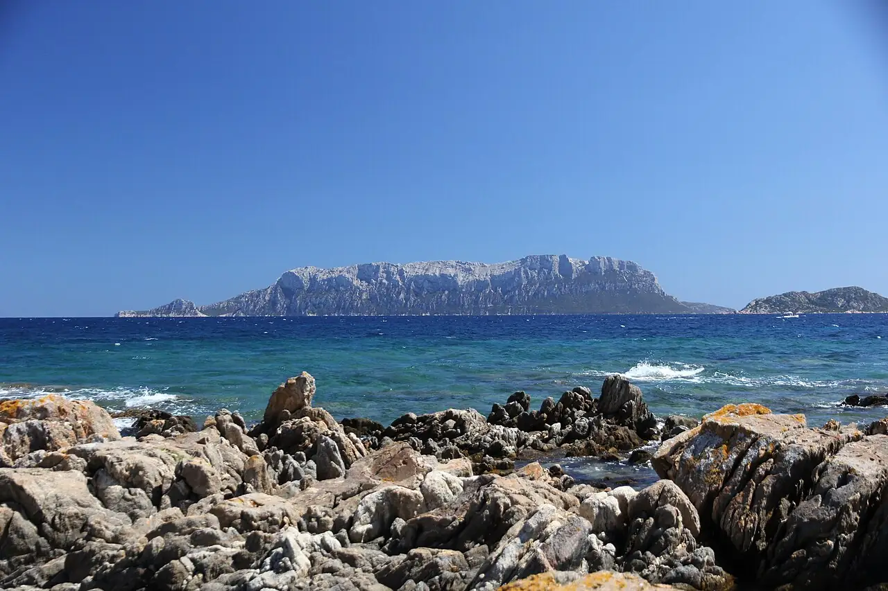

Tavolara — Punta Coda Cavallo
Olbia, Sardaigne, Italie · plongée, snorkeling

Île-montagne calcaire au large d’Olbia, au cœur de l’aire marine protégée Tavolara – Punta Coda Cavallo. Fonds granitiques, tombants et herbiers de posidonie accueillent mérous, barracudas et gorgones.
- Lieu
- Olbia, Sardaigne, Italie
- Niveau
- Variable selon les conditions
- Activités
- plongée, snorkeling
- Type d'eau
- Mer / océan
- Coordonnées
- 40.89, 9.68 (position approximative du secteur)
Dangers à connaître
- Aire marine protégée : zones interdites et mouillage réglementé.
- Trafic de bateaux et de ferries dans le secteur d’Olbia.
Le conseil d'Ocean Buddy
Plonge avec un centre agréé par l’aire marine : ils connaissent les sites autorisés et les zones de réserve intégrale.
Ouvrir dans Ocean Buddy Télécharger sur l'App Store
Source : Fiche Ocean Buddy · septembre 2026 · à vérifier localement.